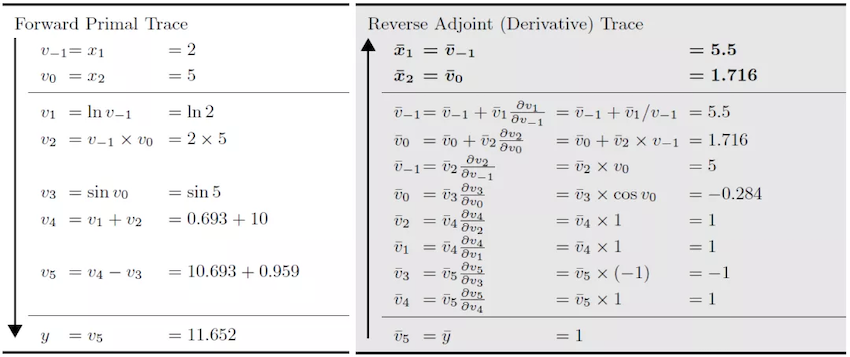

Functional Differential Programming

Automatic Differentiation Overview
Modern AI algorithm, such as deep learning, uses a large amount of data to learn and fit an optimized model with parameters. This training process often uses loss back-propagation to update parameters. Automatic differentiation (AD) is one of the key techniques.
Automatic differentiation is a derivation method between neumerical differentiation and symbolic differentiation. The key concept of AD is to divide the calculation of the computer program into a finite set with basic operations. The derivations of all the basic operations are known. After calculating the derivation of all the basic operations, AD uses chain rule to combine them and gets the final gradient.
The formula of chain rule is:
Based on how to connect the gradient of basic components, AD can be divided into forward mode AD and reverse mode AD.
Forward Automatic Differentiation (also known as tangent linear mode AD) or forward cumulative gradient (forward mode).
Reverse Automatic Differentiation (also known as adjoint mode AD) or reverse cumulative gradient (reverse mode).
Let’s take formula (2) as an example to introduce the specific calculation method of forward and reverse differentiation:
When we use the forward automatic differentiation formula (2) at \(x_{1}=2, x_{2}=5\), \(frac{partial y}{partial x_{1}}\), the direction of derivation of forward automatic differentiation is consistent with the evaluation direction of the original function, and the original function result and the differential result can be obtained at the same time.

When using reverse automatic differentiation, the direction of differentiation of the reverse automatic differentiation is opposite to the evaluation direction of the original function, and the differential result depends on the running result of the original function.

MindSpore first developed automatic differentiation based on the reverse pattern, and implemented forward differentiation on the basis of this method.
In order to explain the differences between forward mode AD and reverse mode AD in further, we generalize the derived function to F, which has an N input and an M output:
The gradient of function \(F()\) is a Jacobian matrix.
Forward Mode AD
In forward mode AD, the calculation of gradient starts from inputs. So, for each calculation, we can get the gradient of outputs with respect to one input, which is one column of the Jacobian matrix.
In order to get this value, AD divies the program into a series of basic operations. The gradient rules of these basic operations is known. The basic operation can also be represented as a function \(f\) with \(n\) inputs and \(m\) outputs:
Since we have defined the gradient rule of \(f\), we know the jacobian matrix of \(f\). So we can calculate the Jacobian-vector-product (Jvp) and use the chain rule to get the gradient outoput.
Reverse Mode AD
In reverse mode AD, the calculation of gradient starts from outputs. So, for each calculation, we can get the gradient of one output with respect to inputs, which is one row of the Jacobian matrix.
In order to get this value, AD divies the program into a series of basic operations. The gradient rules of these basic operations is known. The basic operation can also be represented as a function \(f\) with n inputs and m outputs:
Since we have defined the gradient rule of \(f\), we know the jacobian matrix of \(f\). So we can calculate the Vector-Jacobian-product (Vjp) and use the chain rule to get the gradient outoput.
grad
grad uses reverse mode AD, which calcultes gradients from network outputs.
grad Design
Consuming that the origin function of defining model is as follows:
Then the gradient of \(f()\) to \(x\) is:
The formula of \(\frac{df}{dy}\) and \(\frac{df}{dz}\) is similar to \(\frac{df}{dx}\).
Based on chain rule, we define gradient function bprop: dout->(df, dinputs) for every functions (including operators and graph). Here, df means gradients with respect to free variables (variables defined outside the function) and dinputs is gradients to function inputs. Then we use total derivative rule to accumulate (df, dinputs) to correspond variables.
MindSporeIR has developed the formulas for branching, loops and closures. So if we define the gradient rules correctly, we can get the correct gradient.
Define operator K, backward mode AD can be represented as:
v = (func, inputs)
F(v): {
(result, bprop) = K(func)(K(inputs))
df, dinputs = bprop(dout)
v.df += df
v.dinputs += dinputs
}
grad Implementation
In grad process, the function that needs to calculate gradient will be taken out and used as the input of automatic differentiation module.
AD module will map input function to gradient fprop.
The output gradient has form fprop = (forward_result, bprop). forward_result is the output node of the origin function. bprop is the gradient function which relies on the closure object of fprop. bprop has only one input dout. inputs and outputs are the called inputs and outputs of fprop.
MapObject(); // Map ValueNode/Parameter/FuncGraph/Primitive object
MapMorphism(); // Map CNode morphism
res = k_graph(); // res is fprop object of gradient function
When generating gradient function object, we need to do a series of mapping from origin function to gradient function. These mapping will generate gradient function nodes and we will connect these nodes according to reverse mode AD rules.
For each subgraph of origin function, we will create an DFunctor object, for mapping the original function object to a gradient function object. Dfunctor will run MapObject and MapMorphism to do the mapping.
MapObject implements the mapping of the original function node to the gradient function node, including the mapping of free variables, parameter nodes, and ValueNode.
MapFvObject(); // map free vriabels
MapParamObject(); // map parameters
MapValueObject(); // map ValueNodes
MapFvObjectmaps free variables.MapParamObjectmaps parameter nodes.MapValueObjectmainly mapsPrimitiveandFuncGraphobjects.
For FuncGraph, we need to create another DFunctor object and perform the mapping, which is a recursion process. Primitive defines the type of the operator. We need to define gradient function for every Primitive.
MindSpore defines these gradient functions in Python, taking sin operator for example:
@bprop_getters.register(P.Sin)
def get_bprop_sin(self):
"""Grad definition for `Sin` operation."""
cos = P.Cos()
def bprop(x, out, dout):
dx = dout * cos(x)
return (dx,)
return bprop
x is the input to the original function object sin. out is the output of the original function object sin, and dout is the gradient input of the current accumulation.
When MapObject completes the mapping of the above nodes, MapMorphism recursively implements the state injection of CNode from the output node of the original function, establishes a backpropagation link between nodes, and realizes gradient accumulation.
grad Example
Let’s build a simple network to represent the formula:
And derive the input x of formula (13):
The structure of the network in formula (13) in MindSpore is implemented as follows:
import mindspore.nn as nn
class Net(nn.Cell):
def __init__(self):
super(Net, self).__init__()
self.sin = ops.Sin()
self.cos = ops.Cos()
def construct(self, x):
a = self.sin(x)
out = self.cos(a)
return out
The structure of a forward network is:

After the network is reversely differential, the resulting differential network structure is:

Jacobian-Vector-Product Implementation
Besides grad, Mindspore has developed forward mode automatic differentiation method jvp (Jacobian-Vector-Product).
Compared to reverse mode AD, forward mode AD is more suitable for networks whose input dimension is smaller than output dimension. Mindspore forward mode AD is developed based on reversed mode Grad function.

The network in black is the origin function. After the first derivative based on one input \(x\), we get the network in blue. The second is the blue plot for the \(v\) derivative, resulting in a yellow plot.
This yellow network is the forward mode AD gradient network of black network. Since blue network is a linear network for vector \(v\), there will be no connection between blue network and yellow network. So, all the nodes in blue are dangling nodes. We can use only blue and yellow nodes to calculate the gradient.
References
[1] Baydin, A.G. et al., 2018. Automatic differentiation in machine learning: A survey. arXiv.org. [Accessed September 1, 2021].